Primer Corte
En esta parte del semestre aprendí a utilizar las funciones map, filter, reduce y la funcion lambda.
La funcion map() se utiliza para aplicar una función a cada elemento de una secuencia. Devuelve un objeto map, que puede ser convertido a una lista, tupla, etc.
Por ejemplo, podemos usar la función para convertir una lista de cadenas a números:
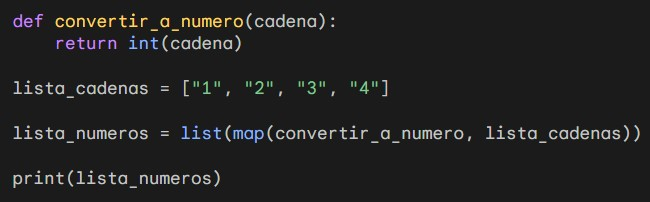
Este código imprimirá el siguiente resultado: [1, 2, 3, 4]
La función map() también se puede utilizar para aplicar una función a dos o más secuencias.
Por ejemplo, el siguiente código calcula la suma de los elementos de dos listas:
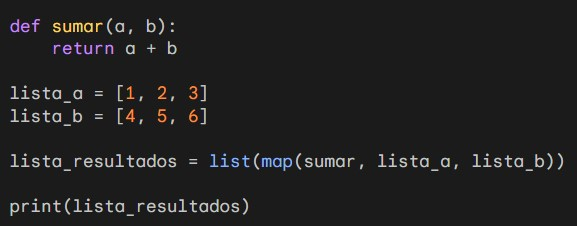
Este código imprimirá el siguiente resultado: [5, 7, 9]
La funcion filter() se utiliza para filtrar los elementos de una secuencia según una condición. Devuelve un objeto iterador, que puede ser convertido a una lista, tupla, etc.
Por ejemplo, podemos usar la función para obtener una lista de números pares de una lista de números:
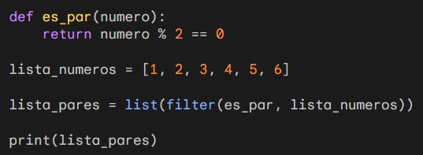
Este código imprimirá el siguiente resultado: [2, 4, 6]
Otro ejemplo es el cálculo de la longitud de las cadenas que tienen más de tres caracteres:
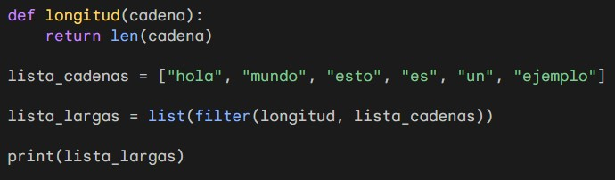
Este código imprimirá el siguiente resultado: ['hola', 'mundo', 'ejemplo']
La función reduce() se utiliza para realizar un cálculo acumulativo sobre una secuencia de valores. El primer argumento de la función es una función que recibe dos argumentos y devuelve un valor.
Por ejemplo, podemos usar la función reduce() para calcular la suma de todos los elementos de una lista:
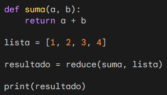
Este código imprimirá el siguiente resultado: 10
La función también se puede utilizar para realizar otras operaciones acumulativas, como la concatenación de cadenas, la comparación de valores, etc.
Por ejemplo, el siguiente código concatena todas las cadenas de una lista:
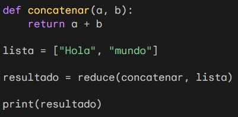
Este código imprimirá el siguiente resultado: Holamundo
Las funciones lambda son una forma de crear funciones anónimas en Python. Las funciones lambda se pueden usar en cualquier lugar donde se pueda usar una función normal.
Por ejemplo, podemos usar una función lambda para calcular el doble de un número:

Este código imprimirá el siguiente resultado: 20
Las funciones lambda también se pueden usar con las funciones map(), filter() y reduce().
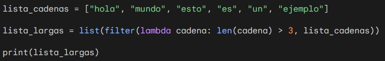
Este código imprimirá el siguiente resultado: ['hola', 'mundo', 'ejemplo']
Segundo Corte
En esta parte del semestre aprendí programacion orientada a objetos y Patrones de diseño.
La programación orientada a objetos (POO) es un paradigma de programación que organiza el código en torno a objetos. Los objetos son entidades que tienen datos y comportamientos.
En el siguiente ejemplo crearemos una clase llamada *Persona*. Esta clase tendrá los siguientes atributos:
- nombre: el nombre de la persona
- apellido: el apellido de la persona
- edad: la edad de la persona
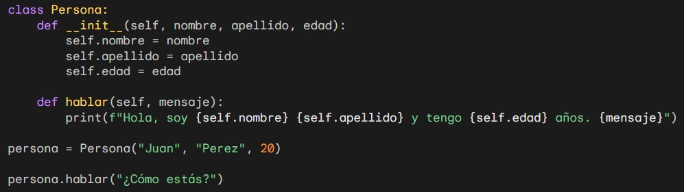
La clase también tiene un método llamado hablar(). Este método imprime un mensaje que incluye el nombre, el apellido y la edad de la persona.
Este código imprimirá el siguiente resultado: Hola, soy Juan Perez y tengo 20 años. ¿Cómo estás?
La POO es un paradigma de programación potente que puede ser utilizado para crear código más organizado y eficiente.
Los patrones de diseño son soluciones a problemas comunes en el desarrollo de software. Se basan en la experiencia de otros desarrolladores y proporcionan una base sólida para la construcción de software robusto y extensible.
Los patrones de diseño se pueden clasificar en tres categorías principales:
- Patrones de creación: Estos patrones se centran en la creación de objetos.
- Patrones estructurales: Estos patrones se centran en la forma en que los objetos se relacionan entre sí.
- Patrones de comportamiento: Estos patrones se centran en la forma en que los objetos se comunican entre sí.
Dentro de los patrones de Creacion aprendí los siguientes:
- Factory
- Singleton
El patrón Factory proporciona una forma de crear objetos sin exponer la lógica de creación.
Este patrón es útil en situaciones en las que se desea que la lógica de creación esté oculta de los usuarios de la clase.
En el siguiente ejemplo, el código crea una clase llamada Factory. Esta clase tiene un método llamado crear_objeto(). El método crear_objeto() recibe un tipo de objeto como argumento. El método devuelve una instancia del objeto especificado.
Las clases Coche y Moto implementan la lógica de creación de los objetos Coche y Moto.
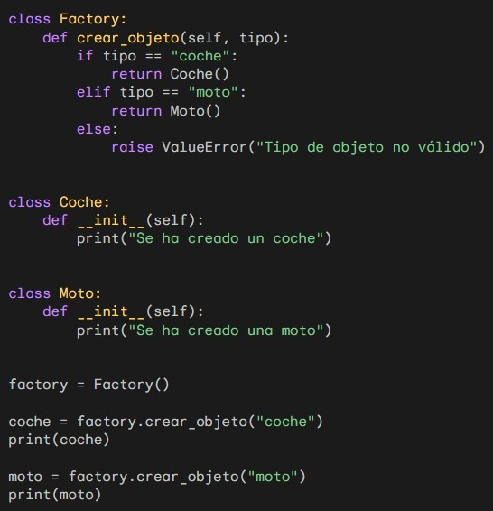
El código crea una instancia de la clase Factory.
El código llama al método crear_objeto() de la fábrica. El método devuelve una instancia de la clase Coche.
El código imprime la instancia de la clase Coche.
El código llama al método crear_objeto() de la fábrica. El método devuelve una instancia de la clase Moto.
El código imprime la instancia de la clase Moto.
El patrón Singleton garantiza que solo se cree una instancia de una clase.
Este patrón es útil en situaciones en las que solo se requiere una instancia de una clase, como en el caso de un objeto de configuración o un objeto de acceso a datos.
En el siguiente ejemplo, el código crea una clase llamada Singleton. Esta clase tiene un atributo privado llamado __instance.
El constructor de la clase Singleton comprueba si ya existe una instancia de la clase. Si no existe, crea una nueva instancia.
El método get_instance() de la clase Singleton devuelve la instancia actual de la clase.
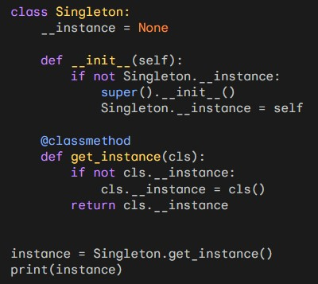
El código crea una instancia de la clase Singleton.
El código imprime la instancia de la clase Singleton.
Este código imprimirá el siguiente resultado: __main__.Singleton object at 0x7f0d69543540
Dentro de los patrones Estructurales aprendí los siguientes:
- Strategy
- Adapter
El patrón Strategy es un patrón de diseño de comportamiento que permite intercambiar algoritmos en tiempo de ejecución.
En el siguiente ejemplo, el código crea una clase llamada Contexto. Esta clase tiene una propiedad llamada estrategia.
La clase Contexto tiene un método llamado ejecutar(). Este método llama al método ejecutar() de la estrategia actual.
La clase Estrategia es una interfaz que define el método ejecutar().
Las clases EstrategiaSuma y EstrategiaResta implementan la interfaz Estrategia.
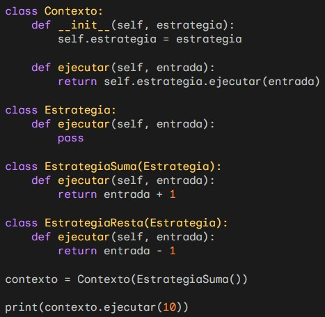
El código crea un objeto Contexto con una estrategia de suma.
El código llama al método ejecutar() del contexto.
Este código imprimirá el siguiente resultado: 11
El patrón Adapter es un patrón de diseño estructural que permite que dos clases que no son compatibles se comuniquen entre sí.
Este código crea una clase llamada Adaptador. Esta clase tiene una propiedad llamada objeto_adaptado.
El constructor de la clase Adaptador recibe un objeto de la clase ObjetoAdaptado.
El método metodo_1() de la clase Adaptador llama al método metodo_2() del objeto objeto_adaptado.
La clase ObjetoAdaptado tiene un método llamado metodo_2() que devuelve una cadena.
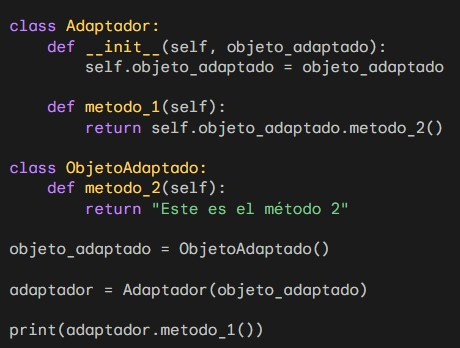
El código crea un objeto ObjetoAdaptado.
El código crea un objeto Adaptador que pasa el objeto ObjetoAdaptado como argumento al constructor.
El código llama al método metodo_1() del adaptador.
Este código imprimirá el siguiente resultado: Este es el método 2
Dentro de los patrones de Comportamiento aprendí los siguientes:
- Observer
- Strategy
El patrón Observer es un patrón de diseño de comportamiento que permite a un objeto notificar a otros objetos sobre cambios en su estado.
En el siguiente ejemplo, crearemos una clase llamada *tema* y dentro de esta habrá una lista de observadores.
La clase Tema tiene un método llamado suscribir(). Este método agrega un observador a la lista de observadores.
La clase Tema también tiene un método llamado notificar(). Este método notifica a todos los observadores de que el tema ha cambiado.
Las clases Observador1 y Observador2 implementan la interfaz Observador. Esta interfaz tiene un método llamado actualizar().
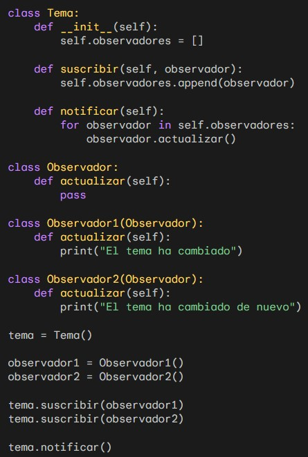
El código crea dos objetos Observador: observador1 y observador2.
El código agrega los dos observadores al tema.
Finalmente, el código llama al método notificar() del tema.
Este código imprimirá el siguiente resultado: El tema ha cambiado - El tema ha cambiado de nuevo
Tercer Corte
En el tercer corte aprendí Programacion concurrente en Java utilizando hilos simples
La programación concurrente en Java es una técnica de programación que permite que dos o más tareas se ejecuten al mismo tiempo en el mismo proceso.
Esta técnica se utiliza para aumentar el rendimiento de los programas, ya que permite que las tareas se ejecuten en paralelo
Un hilo es una unidad de ejecución de código que se ejecuta en paralelo con otros hilos.
Cada hilo tiene su propio contexto de ejecución, que incluye su propia pila de llamadas, su propio estado de ejecución y su propio conjunto de variables locales.
Para el siguiente ejemplo, el código crea dos hilos, uno llamado hilo1 y otro llamado hilo2. Cada hilo implementa la interfaz Runnable, que proporciona un método llamado run() que se ejecuta cuando el hilo se inicia.
En el método run() de cada hilo, se imprime un mensaje en la consola.
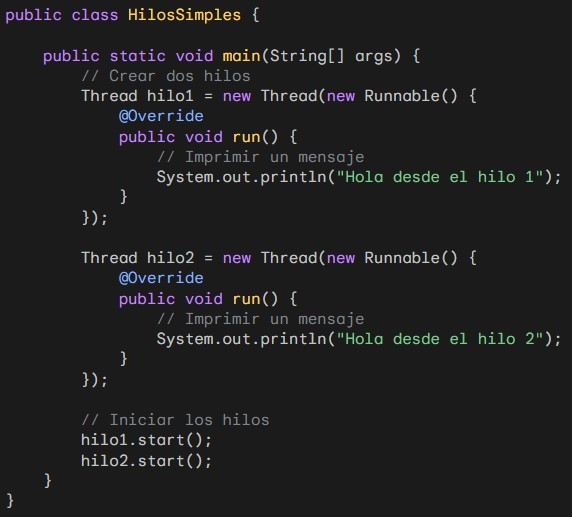
Cuando se ejecuta este código, los dos hilos se inician y se ejecutan en paralelo. El orden en el que se imprimen los mensajes es indeterminado, ya que los hilos se ejecutan de forma independiente.
Aquí hay un ejemplo de la salida del código: Hola desde el hilo 1 - Hola desde el hilo 2